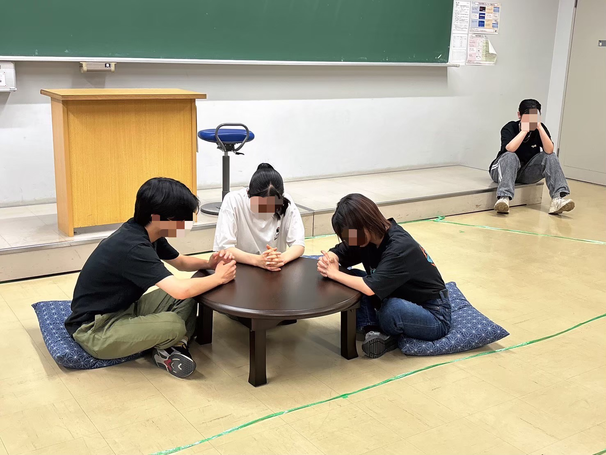
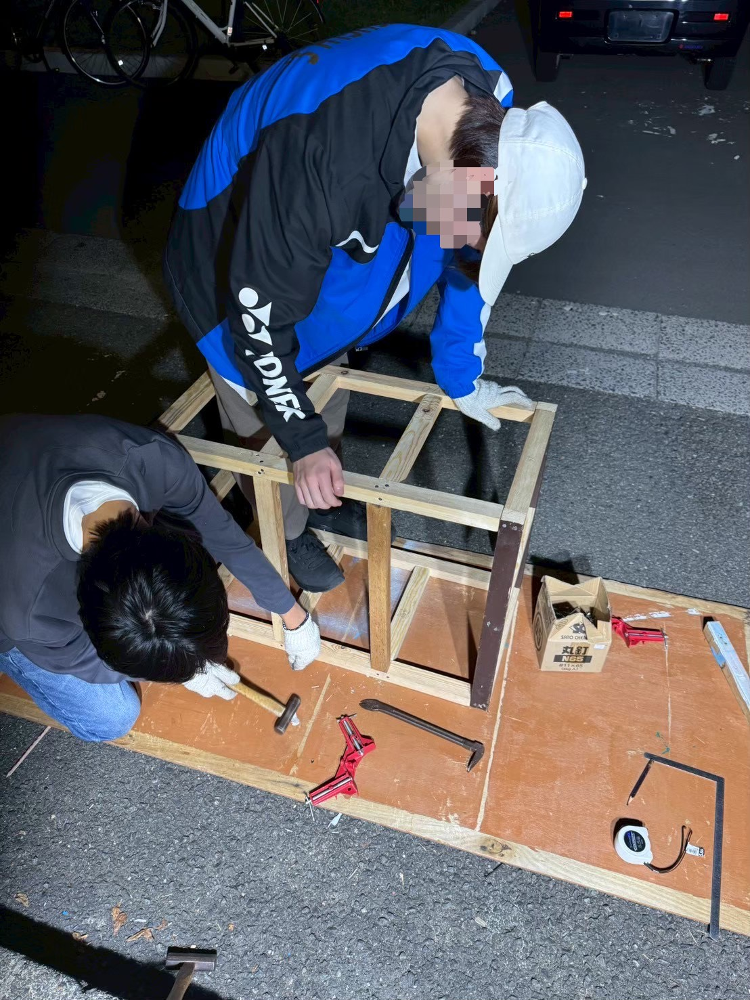
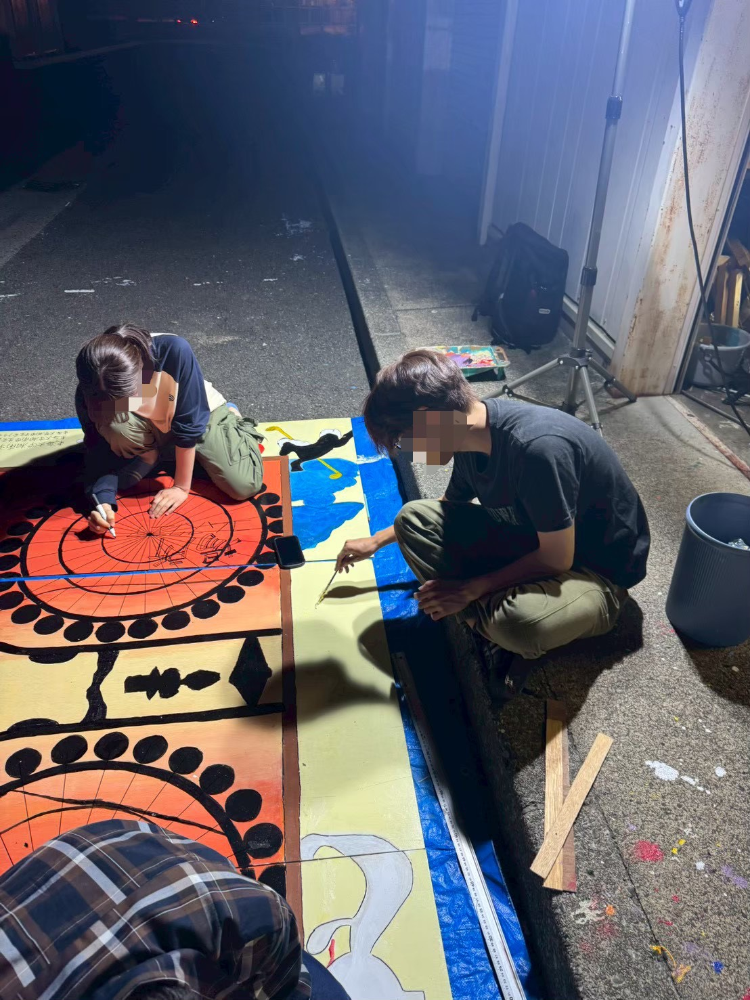
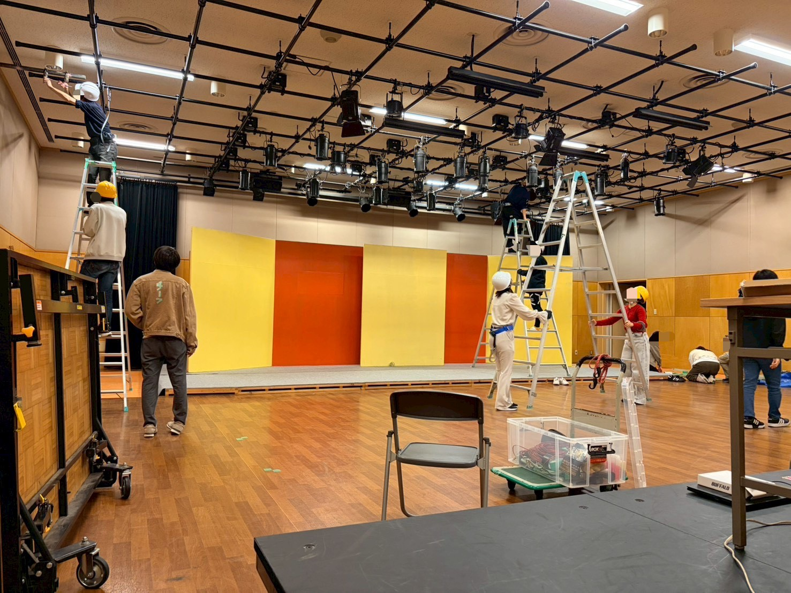
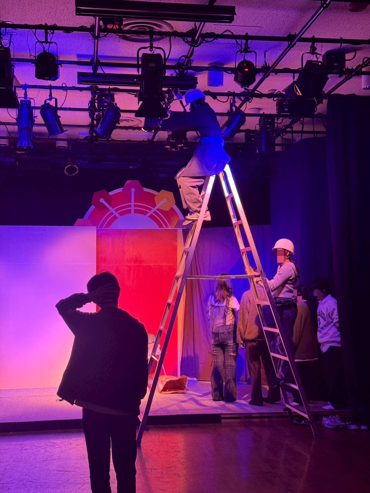

劇を創る仲間たち
公演アーカイブ
部員紹介 「あなたをみます」
代筆
「心に刺さる舞台を創ります。」
代筆
「光の演出にこだわっています！」
代筆
「安全で円滑な運営を支えます。」
代筆
「安全で円滑な運営を支えます。」
代筆
「安全で円滑な運営を支えます。」
代筆
「安全で円滑な運営を支えます。」
舞台裏の風景





一つひとつの作業が、最高の舞台へと繋がっていく。
公演ができるまで
企画・本読み
上演したい部員が書いた台本を選び、役を決めます。物語の解釈を深める大切な時間です。
稽古・製作
役者は演技を磨き、スタッフは大道具や音響・照明プラン・舞台装置を作り上げます。
小屋入り
ホールに舞台を建て、実際の光と音の中でリハーサルを繰り返します。
本番
幕が上がります。観客の皆様と一緒に、唯一無二の物語を共有します。
手作りを極める、職人集団。
脚本の一文字から、照明の一筋の光まで。私たちは「既製品」を使わず、 すべての工程において部員一人ひとりが職人としてこだわり抜きます。
脚本 / 演出
伝えたい思いを文字に起こし、一人のキャラクターに命を与え、役者を率いる。物語の誕生から結末まで、すべての責任を背負い、舞台の核心を創り出す人。
照明
光の当て方、色を決め、一瞬の演出のために観客の目と風景に色彩を乗せる。暗闇の中に感情の機微を映し出し、舞台上の空気を変える人
音響
音のノイズ、効果音、そのキャラクターが聞いているであろう「音」を観客の耳に届ける。0.1秒の操作で物語を増幅させ、劇空間の深みを作る人。
衣装 / メイク
役者の装いに加え、細かな小道具を用いてキャラクターの「生活感」を形にする。役を単なる記号から一人の人間へと変え、作品に実存感を与える人。
舞台装置
木材を切り、組み立て、世界そのものを建築する。何もないゼロの空間に、物語の舞台となる異世界を現出させる、舞台裏の主役。
制作
広報活動をメインに、劇団と観客が繋がる「公演という場所」を設計する。宣伝、運営、チケット管理。幕が開くまでのすべての物語をプロデュースする人。
最新公演情報
観劇にあたって
🔔 観劇のマナー
-
開演時間について
開演直前は受付が混み合います。開演10分前までのご来場にご協力ください。
-
音の出るものについて
上演中、スマートフォン・アラームなどは電源からお切りください。上演中の私語もお控えください。
-
撮影・録音について
上演中の写真撮影・録音・録画は、固くお断りしております。
-
お荷物について
大きなお荷物は受付にてお預かり可能です。受付に待機しているスタッフへお声がけください。
❓ よくあるご質問
Q. チケット代はかかりますか？
A. 原則として全公演「無料」となっております。お気軽にお越しください。
Q. 上演時間はどのくらいですか？
A. 公演によりますが、概ね60分〜90分程度を予定しております。
Q. 予約なしでも入れますか？
A. お席に余裕がある場合は氏名の記載後ご観覧できます。満席の際はお断りする場合があるため、事前予約を推奨しております。
Q. 差し入れは持っていけますか？
A. ありがとうございます！受付にてお預かり可能です（なま物や手作りの食品はご遠慮いただく場合がございます）。
SNS & Information
アクセス
※Googleマップアプリが起動します
コムスクエア音楽ホール（会場）への行き方
1. 「東海大学前駅」からバス（約5分）または徒歩（約15分）で「北門」または「正門」へ。
2. 正門を入って直進。噴水がある広場を通り過ぎ、右手の坂を登ります。
3. 突き当たりを左に曲がると見える、時計台近くの「コムスクエア音楽ホール」が会場です。
3. 公演当日の入り口はこの看板を目印にご来場ください。
所在地： 〒259-1292 神奈川県平塚市北金目4-1-1 東海大学湘南キャンパス 6号館
※公共交通機関でのご来場をお願いいたします。